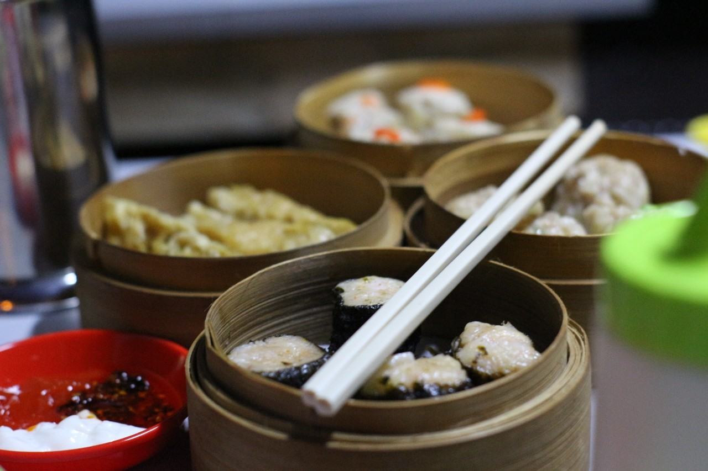
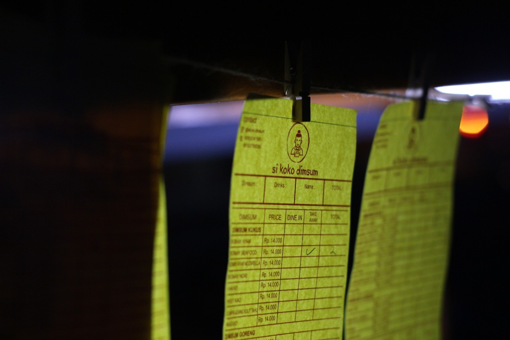
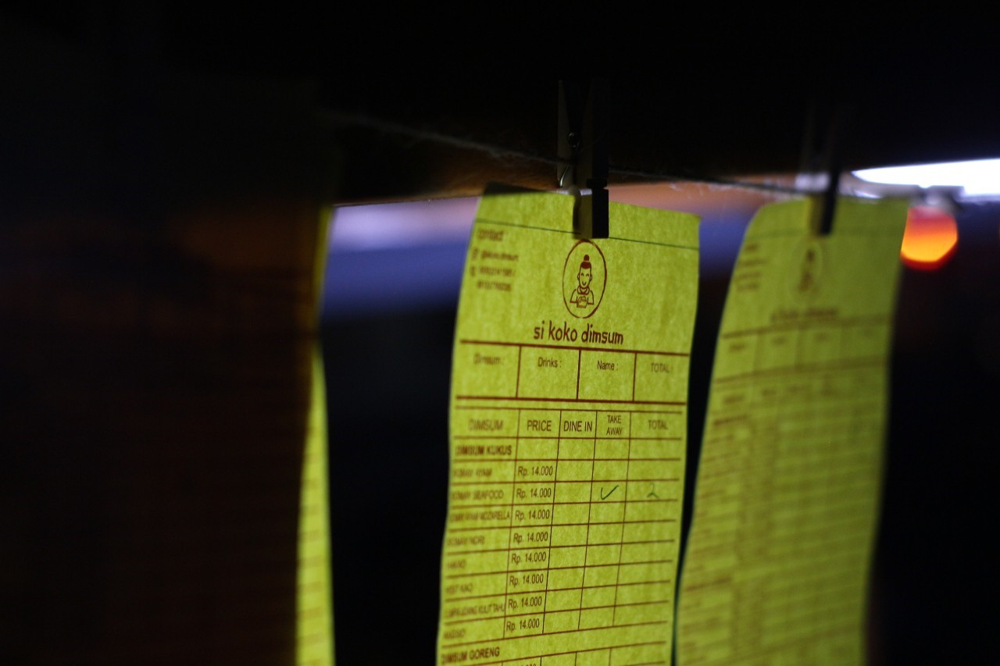

>
Resep Dimsum SiKoKo
Resep Jitu Dimsum SiKoKo

 
Gambar Dimsum SiKoKo

Gambar Dimsum SiKoKo
Bahan-Bahan
- 500 gram daging ayam, cincang halus
- 200 gram udang, cincang halus
- 100 gram tepung sagu
- 2 siung bawang putih, cincang halus
- 1 batang daun bawang, iris halus
- 1 sdt garam
- 1/2 sdt merica
- 1 sdt minyak wijen
Langkah-Langkah
- Campurkan semua bahan dalam wadah besar.
- Bentuk adonan menjadi bulatan kecil.
- Siapkan kukusan dan kukus bulatan adonan selama 30 menit.
- Sajikan Dimsum SiKoKo dengan saus sambal.
Tips
- Gunakan daging ayam yang segar untuk hasil terbaik.
- Gunakan ayam campuran dada dan paha untuk rasa yang lebih kaya.
Lihat Video Tutorial
Informasi Gizi
| Ukuran Porsi |
1 Porsi (100g) |
| Energi |
112 kcal |
| Lemak |
2,64g |
| Lemak Jenuh |
0,7g |
| Lemak tak Jenuh Ganda |
0,542g |
| Lemak tak Jenuh Tunggal |
1,35g |
| Kolesterol |
30mg |
| Protein |
15,3g |
| Karbohidrat |
9,56g |
| Serat |
0,3g |
| Gula |
0,3g |
Komen lah !!!